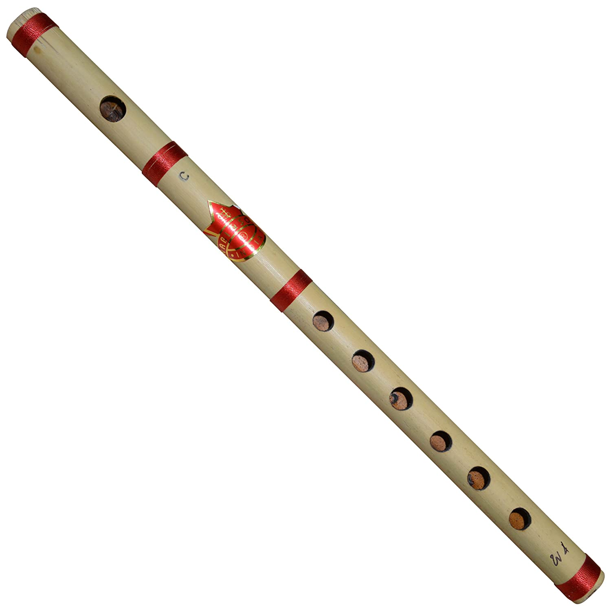
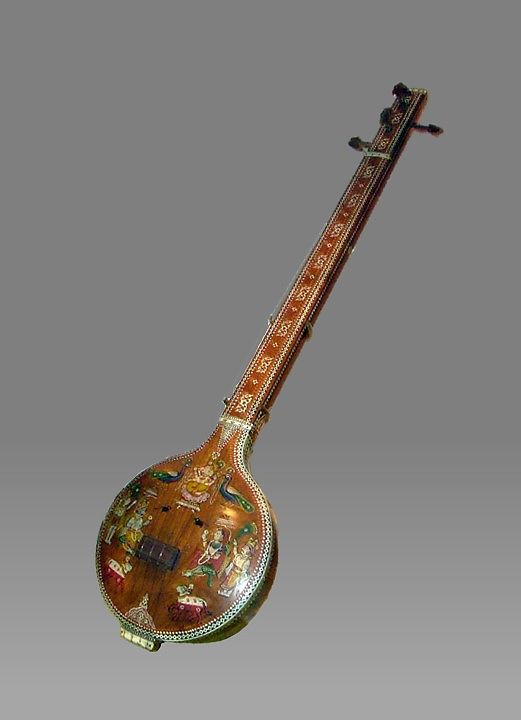
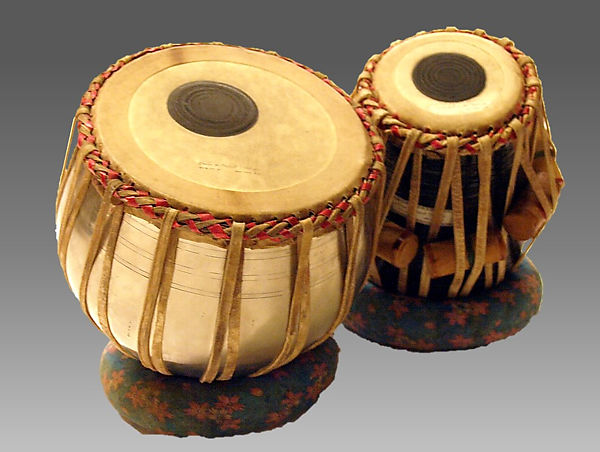
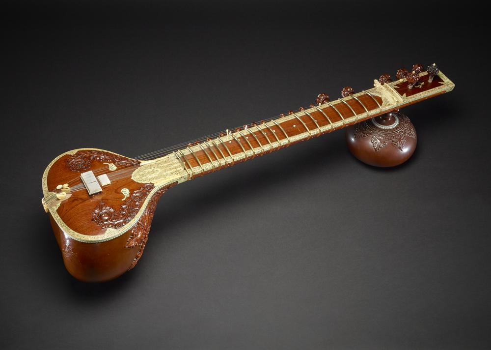
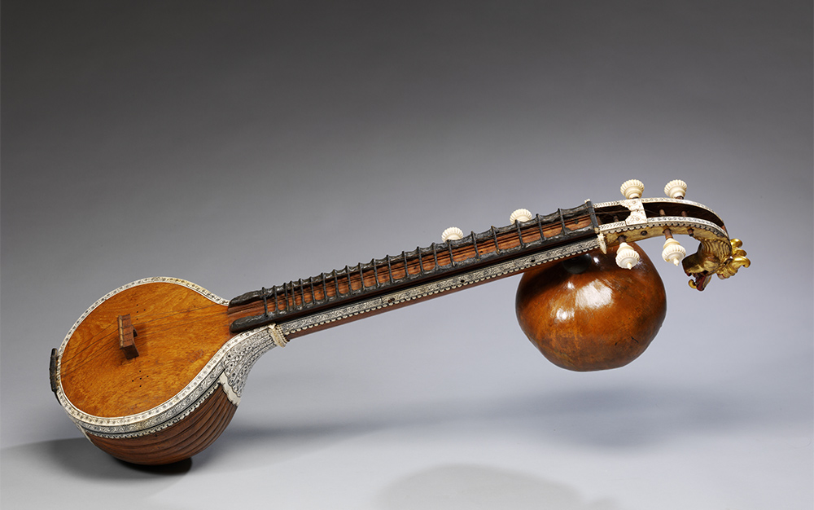

Ancient Musical Instruments
Bansuri
Bansuri is a very sensitive instrument; almost all the delicate graces, curves, embellishments and shades of classical music can be performed to perfection upon it. The highest order of music can be played on this instrument, and its resonance in mandra saptak (lower octave) leaves a rare charm in the minds of its listeners. Being a portable instrument, it can be carried easily from place to place and climatic changes have very little or no effect on the seasoned bamboo.
Tambura
The tambura is a long, stringed instrument made of light hollow wood, with either a wooden or a gourd resonator. It is typically used in accompaniment with other instruments, providing a drone pitch. Some of the tamburas in the Museum’s collection are not full-sized instruments, but rather miniatures created for their aesthetic appearance. The artistic craftsmanship on the inlay in these objects is beautiful. India has a long history of creating musical instruments as decorative objects, and that tradition is represented in the Museum’s collection.
Tabla
The tabla is actually two drums played by the same performer. Both drums have compound skins onto which a tuning paste, or siyahi, is added to help generate the wide variety of tones these drums can produce. The bayan is the larger of the two drums and is generally made of metal or pottery. The siyahi on the bayan is off-center, which allows the performer to add variable pressure on the skin, changing the pitch of the instrument with the palm of his or her hand while striking it with the fingertips. The smaller drum is called the dahini, or sometimes referred to as the tabla. Dahini are usually made of heavy lathe-turned rosewood and provide much higher pitch sounds than does the bayan.
Sitar
The sitar is easily India’s most famous musical instrument overseas, having been popularized in the West by George Harrison of the Beatles, who studied with Ravi Shankar, one of the greatest sitarists of the twentieth century. The sitar has its roots in both the Persian setar as well as in the vina. Like many stringed instruments used in classical Indian music, the modern sitar has sympathetic strings that sound only when one of the primary strings is struck on the same note. These strings, which are never played by the performer, resound in sympathy with the playing strings, creating a polyphonic timber that many have come to associate with India through the popularity of this instrument. It is interesting to note, however, that the addition of the sympathetic strings is a relatively recent development in Indian music starting in the late nineteenth century. The use of sympathetic strings is known to have existed in other parts of the world prior to their initial use in India.
Vina
the vina is one of the most commonly depicted instruments in Indian iconography. The vina has taken many forms in both South and North India. In North India, it was called the bin or the rudravina, and was the predecessor of the sitar. It was often built of two large gourd resonators connected by a piece of bamboo, with frets held on with wax. Most of the vinas depicted in iconography are rudravinas. In the South, the vina—or saraswati vina—continues to be the most popular stringed instrument in classical music. In its basic shape, the vina is a hollow wooden stringed instrument with two gourd resonators (though there can often be more than two or sometimes only one gourd resonator). The gottuvadyam, or chitravina, is another important instrument in Karnatak music. Unlike the rudravina and the saraswati vina, the gottuvadyam has no frets and is played with a slide using a method similar to that of the Hawaiian slide guitar.